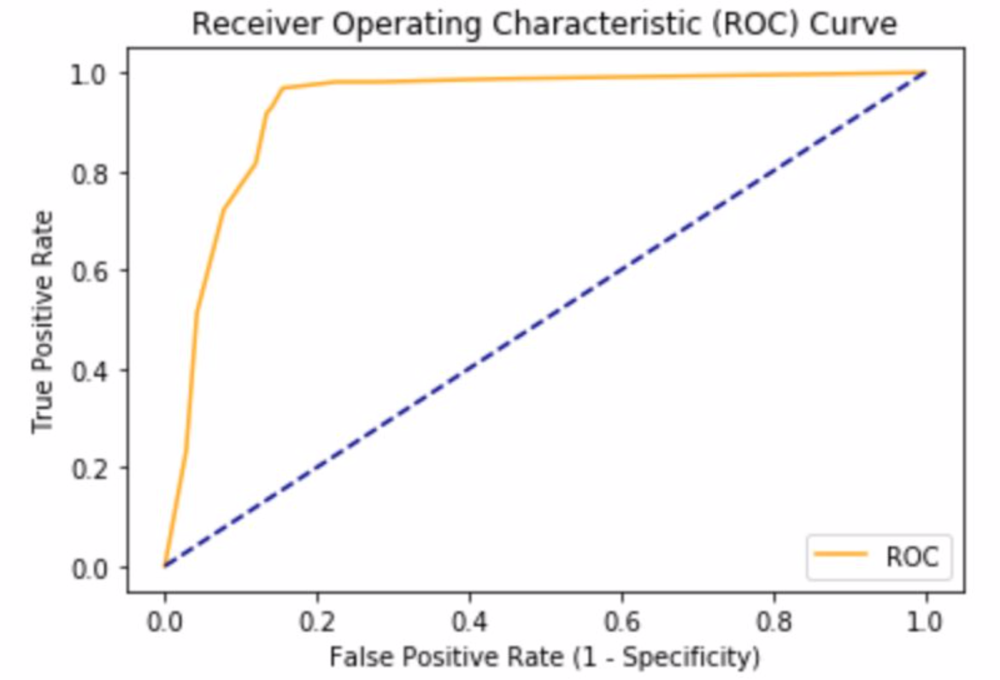

3.3 Relación entre variables cualitativas
Vamos a estudiar la relación entre variables cualitativas. Es lógico pensar que existe relación entre ambas variables cuando un cambio de categoría en una se asocia a un cambio de categoría en la otra y viceversa. Es relativamente sencillo expresar un carácter de forma cualitativa pero, desde un punto de vista estadístico, el tratamiento de las variables cualitativas es mucho más engorroso que el de las numéricas, en especial a la hora de estudiarlas conjuntamente.
En este apartado estudiaremos las variables de forma descriptiva, es decir, mediante tablas, representaciónes gráficas y cálculo de los valores típicos. A diferencia del estudio de variables numéricas, la representación en forma de tabla de los datos tiene interés en nuestro caso porque, al tratarlos de manera categórica, se registrarán muchas repeticiones.
3.3.1 Tablas de contingencia
Para realizar una tabla de contigencia, tenemos una muestra de n individuos (u observaciones) sobre los que se evalúan simultáneamente dos variables cualitativas X e Y. Se construye una tabla con tantas columnas como valores tome X y tantas filas como valores tome Y en la distribución. Hallamos la frecuencia absoluta de cada par de valores de la variable (X,Y). Para ello, contamos el número de veces que se repite ese par de valores en la distribución y lo anotamos en la celda correspondiente. Esa es la frecuencia absoluta conjunta. Después, se añade una última fila y una última columna en la tabla que contiene las frecuencias absolutas de las variable X e Y por separado. Estas son las frecuencias marginales.
Veamos un ejemplo; tenemos datos de 258 personas categorizadas por la variable colesterol, con tres grupos: bajo, medio y alto y la variable sexo, con dos grupos: hombre y mujer. La tabla de contingencia de los datos es:
Así, tenemos 115 hombres con el colesterol bajo (frecuencia absoluta conjunta), 99 mujeres en total (frecuencia marginal) así como 52 individuos con el colesterol medio (frecuencia marginal).
Una vez tabulados los datos, podemos calcular proporciones (porcentajes) de especial utilidad para estudios estadísticos de relación entre variables.
Comenzamos con la proporción marginal, esto es, las frecuencias relativas correspondientes a las frecuencias marginales. Utilizamos la notación \(\widehat{P}\) con un circunflejo para indicar que son proporciones obtenidas de una muestra. P se reserva para indicar una probabilidad referida a toda la población.
\(\widehat{P}(Bajo)=\frac{168}{258}=0.651\)
\(\widehat{P}(Medio)=\frac{52}{258}=0.202\)
\(\widehat{P}(Alto)=\frac{38}{258}=0.147\)
\(\widehat{P}(Hombre)=\frac{159}{258}=0.616\)
\(\widehat{P}(Mujer)=\frac{99}{258}=0.384\)
ˆ Vamos con las proporciones condicionadas. Con \(\widehat{P}(Hombre/Medio)\) entendemos la proporción de individuos que, con nivel de colesterol medio, son hombres. Sin embargo, \(\widehat{P}(Alto/M ujer)\) sería la proporción de individuos que, siendo mujeres, tendrían el colesterol alto.
Así calculamos por filas:
\(\widehat{P}(Bajo/Hombre)=\frac{115}{159}=0.723\)
\(\widehat{P}(Medio/Hombre)=\frac{23}{159}=0.145\)
\(\widehat{P}(Alto/Hombre)=\frac{21}{159}=0.132\)
\(\widehat{P}(Bajo/Mujer)=\frac{53}{99}=0.535\)
\(\widehat{P}(Medio/Mujer)=\frac{29}{99}=0.293\)
\(\widehat{P}(Alto/Mujer)=\frac{17}{99}=0.172\)
Y por columnas:
\(\widehat{P}(Hombre/Bajo)=\frac{115}{168}=0.685\)
\(\widehat{P}(Hombre/Medio)=\frac{23}{52}=0.442\)
\(\widehat{P}(Hombre/Alto)=\frac{21}{38}=0.553\)
\(\widehat{P}(Mujer/Bajo)=\frac{53}{168}=0.315\)
\(\widehat{P}(Mujer/Medio)=\frac{29}{52}=0.558\)
\(\widehat{P}(Mujer/Alto)=\frac{17}{38}=0.447\)
Por último, las proporciones conjuntas indican la proporción de individuos que cumplen 2 características de las variables. Por ejemplo, P(Mujer y Bajo) = P(Mujer \(\cap\) Bajo) indica la proporción de individuos que son mujeres y tienen el colesterol bajo.
\(\widehat{P}(Bajo \cap Hombre)=\frac{115}{258}=0.446\)
\(\widehat{P}(Medio \cap Hombre)=\frac{23}{258}=0.089\)
\(\widehat{P}(Alto \cap Hombre)=\frac{21}{258}=0.081\)
\(\widehat{P}(Bajo \cap Mujer)=\frac{53}{258}=0.205\)
\(\widehat{P}(Medio \cap Mujer)=\frac{29}{258}=0.112\)
\(\widehat{P}(Alto \cap Mujer)=\frac{17}{258}=0.066\)
Una propiedad de estas proporciones se deriva del concepto de probabilidad condicionada. Establece que:
\(\widehat{P}(A \cap B)=\widehat{P}(A) \cdot \widehat{P}(B/A)\)
Por ejemplo, según este resultado:
\(\widehat{P}(Bajo \cap Hombre)=\widehat{P}(Bajo) \cdot \widehat{P}(Hombre/Bajo)\)
Vamos a comprobarlo con las proporciones obtenidas anteriormente:
\(\left. \begin{array}{r} \hat{P}(Bajo \cap Hombre)=0,446 \\ \hat{P}(Bajo)=0,651 \\ \hat{P}(Hombre/Bajo)=0,685 \end{array} \right\} \Rightarrow 0,446=0,651\cdot 0,685\)
3.3.2 Diagrama de barras agrupadas
Otra forma de comparar variables cuantitativas es mediante el uso de diagramas de barras agrupadas. En nuestro ejemplo, podemos agrupar los datos en función del nivel de colesterol:
o en función del sexo:
Estos diagramas nos proporcionan una información visual sobre los posibles cambios en las proporciones tanto por filas como por columnas. En términos estadísticos, entendemos que la correlación a nivel muestral entre las dos variables cualitativas observadas es más fuerte cuanto mayores sean las diferencias entre las proporciones condicionadas al pasar de una categoría a otra.
3.3.3 Gráficos de rectángulos para comparar variables cuantitativas
Para medir intuitivamente el grado de correlación entre variables cuantitativas, vamos a utilizar un tipo de gráfico, el de rectángulos.
Seguimos con nuestro ejemplo:
Una forma muy interesante de visualizar esos datos es mediante diagramas de rectángulos en los que el área de cada rectángulo es proporcional a cada frecuencia. Así, el diagrama de rectángulos de la tabla anterior es el siguiente:

Para comprobar si las variables estudiadas (nivel colesterol y sexo en nuestro ejemplo) son independientes, podemos compararlas con los datos teóricos o esperados que tendríamos si hay independencia entre variables.
Para calcular dichos datos esperados en caso de independencia entre variables, partimos de un resultado de teoría de probabilidades: “si 2 sucesos son independientes la probabilidad de que ocurran a la vez es el producto de la probabilidad de que ocurra uno por la probabilidad de que ocurra otro”. En notación matemática:
\(P(A \cap B)= P(A) \cdot P(B)\)
Esto lo podemos ver de una forma sencilla con el lanzamiento de dos monedas. Los resultados son independientes ya que el resultado de lanzar una moneda (cara o cruz) no influye en el resultado obtenido al lanzar la otra moneda. Así, la probabilidad de obtener 2 caras es el producto de obtener cara en una moneda (0.5) multiplicado por la probabilidad de obtener cara con la otra moneda (0.5). Así P(2 caras) = 0.5 · 0.5 = 0.25.
De este modo, si partimos de la tabla con las frecuencias marginales de nuestro conjunto de datos:
vamos a calcular los valores esperados en caso de independencia de variables, es decir, vamos a completar esa tabla con los valores que se supone que debería haber en caso de que las 2 variables (sexo y nivel de colesterol) sean independientes.
Empezamos con el valor esperado para hombres con nivel de colesterol bajo. Si la proporción esperada es P(Hombre \(\cap\) Bajo ), el número de individuos esperado será 258·P(Hombre \(\cap\)Bajo).
Por ejemplo, si tenemos 200 individuos y la probabilidad de ser rubio es 0.36, el número esperado de individuos rubios será 200·0.36 = 72.
Volviendo a nuestro ejemplo, para calcular los individuos esperados y suponiendo que las variables son independientes, aplicamos el resultado de probabilidad que hemos comentado:
\(\widehat{P}(Hombre \cap Bajo)=\widehat{P}(Hombre) \cdot \widehat{P}(Bajo)\)
Como \(\widehat{P}(Hombre)=\frac{159}{258}\) y \(\widehat{P}(Bajo)=\frac{168}{258}\), el número esperado de hombres con el colesterol bajo es:
\(258 \cdot \widehat{P}(Hombre \cap Bajo) = 258 \cdot \widehat{P}(Hombre) \cdot \widehat{P}(Bajo)\)
\(258 \cdot \widehat{P}(Hombre \cap Bajo) = 258 \cdot \frac{159}{258} \cdot \frac{168}{258} = \frac{159 \cdot 168}{258}=103.5\)
En el resultado final, al ser individuos, no tiene sentido usar decimales pero dejamos uno para tener más exactitud en cálculos posteriores. De esto modo, vemos que, para obtener el número de individuos esperado no hay más que multiplicar las frecuencias marginales y dividir el resultado por el número total de individuos:
De este modo, podemos obtener de una forma muy sencilla la tabla de contingencia de datos teóricos suponiendo que las variables son independientes a partir de las frecuencias marginales de nuestra muestra:
así como el diagrama de rectángulos correspondiente:
Comparando los 2 gráficos de rectángulos obtenidos (datos observado y teóricos), parece que se ajustan bien, es decir, que con los valores observados, podemos deducir intuitivamente que las variables son independientes y que no hay relación entre ellas.
3.3.4 Gráficos o diagramas de rectángulos (Práctica)
Para realizar esta práctica, debe tener descargado en su ordenador el archivo 2.practicas.xlsx y abrir la hoja/pestaña correspondiente.
En el siguente vídeo se muestran los pasos para realizar la práctica.
3.3.5 Diagnóstico clínico
Una cuestión de gran interés en Medicina es el estudio de la eficacia de los diferentes procedimientos de diagnóstico que guarda una estrecha relación con las tablas de contingencia 2 x 2. Cabe destacar que una gran cantidad de procedimientos de diagnóstico tienen una importante componente estadística . Partimos de métodos que consisten en medir una variable de tipo numérico (analítica, ecografía, TAC, etc.) en el caso de conocer la distribución (proporción) aproximada para los individuos sanos de una variable concreta, es decir, qué valores puede tomar y en qué proporciones. De este modo, un valor anómalo respecto a dicha distribución puede ser considerado en principio patológico. Ya vimos que se puede considerar anómal un valor que está a más de 3 desviaciones típicas de la media, utilizando la desigualdad de Chevyshev donde en el intervalos \((\overline{x}-3\sigma, (\overline{x}+3\sigma)\) están, al menos, el 88% de los datos.
Sin embargo, un valor dentro de los límites correspondientes a la población sana supondrá un resultado en el diagnóstico negativo, lo cual no tiene por qué excluir la posibilidad de que el individuo esté enfermo.
Consideremos la elección de una prueba o investigación médica. Tenemos que ser conscientes del hecho de que las pruebas no son completamente precisas. Se producen falsos resultados positivos y negativos. Al confrontar la enfermedad con el resultado del diagnóstico se pueden dar las situaciones presentes en esta tabla
Así, puede ocurrir que un individuo sano sea diagnosticado erróneamente como enfermo (positivo), lo cual se denomina falso positivo. También es posible que un individuo enfermo sea diagnosticado como sano (negativo), lo cual sería un ** falso negativo**.
Ppara estudiar la fiabilidad de un procedimiento de diagnóstico, vamos a considerar unos datos ficticios dispuestos en una tabla 2 x 2 donde se relacionan la enfermedad (sano, enfermo) con el resultado del diagnóstico (positivo, negativo):
En cualquier estudio interesa que los verdaderos positivos y negativos sean alcancen los máximos valores posibles. Para cuantificar estos resultados verdaderos, se definen las siguientes medidas:
Sensibilidad: es la proporción de enfermos que son diagnosticados como positivos (proporción de verdaderos positivos).
Especificidad: es la proporción de sanos diagnosticados como negativos (proporción de verdaderos negativos).
De este modo, en nuestro ejemplo:
Sensibilidad = \(\widehat{P}(+/E)=\frac{90}{100}=0.90\)
Especificidad = \(\widehat{P}(-/S)=\frac{810}{900}=0.90\)
Tenemos una sensibilidad del 90% y una especificidad también del 90%. Parecen buenos resultados pero vamos a obtener otros valores, los valores predictivos, que nos van a indicar la fiabilidad de los diagnóstico.
El valor predictivo positivo (VPP) es la probabilidad de que la enfermedad esté presente cuando la prueba es positiva. Para calcularlo, se divide el número de verdaderos positivos entre el número total de positivos, es decir:
\(VPP=\frac{Verdaderos ~ positivos}{Total ~ positivos}=\frac{Verdaderos ~ positivos}{Verdaderos ~ positivos ~ + ~ Falsos ~ positivos}\)
El valor predictivo negativo (VPN) es la probabilidad de que la enfermedad no esté presente cuando la prueba es negativa. Para calcularlo, se divide el número de verdaderos negativos entre el número total de negativos, es decir:
\(VPN=\frac{Verdaderos ~ negativos}{Total ~ negativos}=\frac{Verdaderos ~ negativos}{Verdaderos ~ negativos ~ + ~ Falsos ~ negativos}\)
Volviendo a nuestro ejemplo:
Tenemos que los valores predictivos son:
\(VPP=\frac{90}{180}=0.50\)
\(VPN=\frac{810}{820}=0.99\)
De este modo, tenemos un valor predictivo positivo del 50% (solo la mitad de los pacientes con un resultado positivo realmente tendrá la enfermedad) y un valor predictivo negativo del 99%, lo que significa que solo casi todos los pacientes con un resultado negativo en realidad no tendrán la enfermedad.
Los valores predictivos dependen mucho de la prevalencia de una enfermedad. En nuestro ejemplo, teníamos una muestra de 1000 pacientes en los que la enfermedad existe en solo el 10%. Es esta baja prevalencia la que nos da el pobre valor predictivo positivo. Al interpretar valores predictivos positivos y negativos, siempre debe comparar la prevalencia de la enfermedad en la muestra del estudio frente a la prevalencia de la enfermedad en la población de pacientes.
3.3.6 Curvas ROC (Receiver Operating characteristic Curve)
Vamos a presentar un tipo de gráfico que relaciona de la sensibilidad de un test de diagnóstico y el complementario de la especificidad en función del punto de corte que indica que un test es positivo. Son las conocidas como curvas características o curvas ROC. A menudo se usan para elegir entre varios test aunque el procedimiento no tiene en cuenta la prevalencia de la enfermedad que se estudia.
Vamos a utilizar un ejemplo real tomado del artículo Body mass index and waist circumference are predictor biomarkers of breast cancer risk in Iranian women en el que se obtienen datos respecto al punto de corte del Índice de Masa Corporal (BMI Body Mass Index) para la detección del cáncer de mama. Los datos están en la siguiente tabla:
Tenemos entonces valores de la sensibilidad y la especificidad para distintos puntos de corte. Si representamos su variación:
vemos que cuando al aumentar el punto de corte (criterio), aumenta la especificidad (proporción de verdaderos negativos) y disminuye la sensibilidad (proporción de verdaderos positivos).
Para ver si el biomarcador del Índice de Masa Corporal tiene capacidad predictiva para discriminar el cáncer de mama de los sujetos normales, vamos a construir la curva ROC e interpretarla. Para ello, calculamos los siguientes valores:
La proporción de verdaderos positivos (TPR: True Positive Rate): cociente entre los verdaderos positivos y la suma de los verdaderos positivos y los falsos negativos. Coincide con la sensibilidad.
La proporción de falsos positivo s (FPR: False Positive Rate): cociente entre los verdaderos positivos y la suma de los falsos positivos y los verdaderos negativos. Es el complementario de la especificidad (1 - especificidad).
Un ejemplo de curva ROC asociada a un clasificador para el diagnóstico clínico es:

donde se ha representado la curva que relaciona la proporción de falsos positivos y la proporción de verdaderos positivos.
Para entender el significado de esta curva, vamos a presentar algunos ejemplos “precocinados” que muestran situaciones extremas.
Adivinando: el primer ejemplo es el más simple: una línea diagonal. Una línea diagonal indica que el clasificador solo está haciendo conjeturas completamente al azar. Dado que este clasificador sólo será correcto el 50% del tiempo, es lógico que su TPR y FPR también sean iguales. Esta línea diagonal se suele mostrar en todas las curvas ROC.
Clasificador perfecto: hace que cada predicción sea correcta. En este caso se tiene una compensación perfecta entre TPR y FPR lo que significa que hay un 100% de verdaderos positivos (TPR = 1) y un 0% de falsos positivos (FPR = 0).
Peor que adivinar: un mal clasificador (es decir, algo que es peor que adivinar) aparecerá por debajo de la línea diagonal. Si esto aparece, mal negocio.
Mejor que adivinar: por el contrario, un buen clasificador supone que la curva esté por encima de la diagonal. Cuanto más se acerque al clasificador perfecto, mejor. En la imagen, la curva ROC corresponde a un clasificador no muy bueno.
En nuestro ejemplo del biomarcador del Índice de masa corporal, la curva ROC es:
Por lo que parece que el biomarcador del Índice de masa corporal tiene capacidad predictiva para discriminar el cáncer de mama de los sujetos normales. Para ello se calcula un valor, el área debajo de la curva (AUC Area Under the Curve) que, en este caso, es de 0.78. El mejor valor es 1 (clasificador perfecto) mientras que el peor es 0.5 (adivinando).
Intuitivamente, si consideramos que un AUC = 0.75 se encuentra a medio camino entre la no-discriminación (AUC = 0.50) y la discriminación perfecta (AUC = 1.00), el AUC del biomarcador del Índice de masa corporal se encuentra más cercana a la perfección que a la no-discriminación (AUC = 0.78), por lo tanto, resulta razonable plantear que es un test diagnóstico con una capacidad aceptable de discriminar pacientes con y sin cáncer de mama.
Se ha pretendido mostrar la eficacia de un clasificador o método de diagnóstico clínico desde un punto de vista descriptivo. En el apartado de estadística inferencial veremos con más detalle todos estos aspectos.